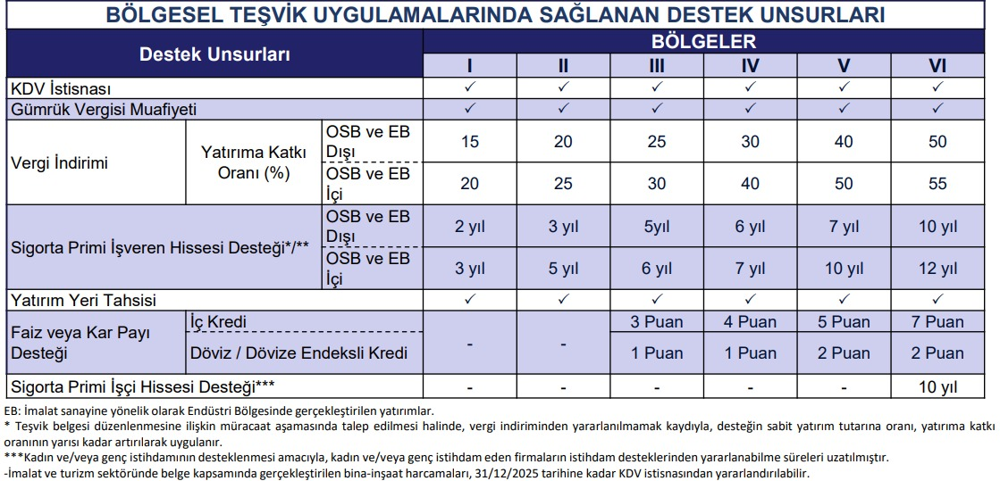

0555-555-55-55

0555-555-55-55
0555-555-55-55
0555-555-55-55
Yatırım Teşvik Belgesi, yatırım projelerinin devlet tarafından desteklenmesini sağlayan ve çeşitli teşvik unsurları içeren bir belgedir. Bu belge, yatırımcılara proje bazında çeşitli teşvikler sunarak, yatırımların daha cazip hale gelmesini sağlar.

Yatırım Teşvik Belgesi’nin sunduğu başlıca teşvikler şunlardır.
Yatırım Teşvik Belgesi kapsamında yurt içinden ve yurt dışından temin edilecek yatırım malı makine ve teçhizat ile belge kapsamındaki yazılım ve gayri maddi hak satış ve kiralamaları için katma değer vergisinin ödenmemesi şeklinde uygulanır.
Yatırım Teşvik Belgesi kapsamında yurt dışından temin edilecek yatırım malı makine ve teçhizat için gümrük vergisinin ödenmemesi şeklinde uygulanır.
Gelir veya kurumlar vergisinin, yatırım için öngörülen katkı tutarına ulaşıncaya kadar indirimli olarak uygulanmasıdır.
Bu destek, stratejik yatırımlar, bölgesel teşvik uygulamaları ve öncelikli yatırımların teşviki uygulamaları çerçevesinde düzenlenen teşvik belgeleri kapsamında sağlanır. Yatırım Teşvik Belgesi kapsamında kullanılan en az bir yıl vadeli krediler için sağlanan bir finansman desteğidir.
Yatırım Teşvik Belgesi düzenlenmiş stratejik yatırımlar, bölgesel ve öncelikli yatırımlar için Çevre, Şehircilik ve İklim Değişikliği Bakanlığınca (Milli Emlak Genel Müdürlüğü) belirlenen usul ve esaslar çerçevesinde yatırım yeri tahsis edilebilir.
Yatırım Teşvik Belgesi kapsamı yatırımla sağlanan ilave istihdam için ödenmesi gereken sigorta primi işveren hissesinin asgari ücrete tekabül eden kısmının belirli bir süre Bakanlıkça karşılanmasıdır.
Sabit yatırım tutarı 500 milyon Türk Lirasının üzerindeki Stratejik Yatırımlar kapsamında gerçekleştirilen bina-inşaat harcamaları için tahsil edilen KDV’nin iade edilmesidir.
FEVZİ ASLAN
0555-555-55-55
fevziaslan@aslan.com.tr
FEVZİ'NİN HALASI
0666-666-66-66
fevzininhalasın@aslan.com.tr
Bize ulaşın info@aslan.com.tr